Main Display
The main display (highlighted in orange) is the center viewing area that will show all graphical and numerical information about the data set.
This navigation guide will introduce the options within the Trelliscope viewer and how to use them. For information on creating a Trelliscope viewer see the tutorial.
Trelliscope is a visualization tool that provides interactive exploration of large collections of plots. Trelliscope enables detailed, flexible visualization of large data sets by partitioning data into subsets, applying a plot method to each subset to create a panel, and then allowing the analyst to interactively view the panels. Interaction is provided by the ability to sort and filter the panels based on metrics computed for each subset that describe behaviors of interest. These metrics are called cognostics
In addition, Trelliscope results can be easily shared with other researchers in a way that they can view and interact with.
When the user has generated or opened a new display of visualization panels using Trelliscope in their browser a list of one or more displays will appear. Once the user selects a display from the list, a plot will be shown in the viewer.
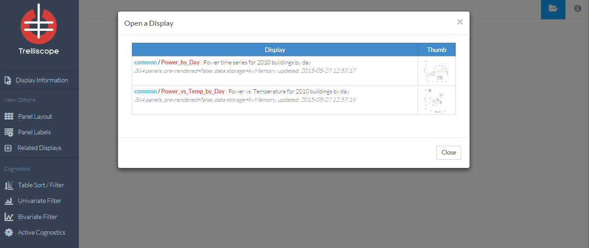
The Trelliscope viewer has three main features.
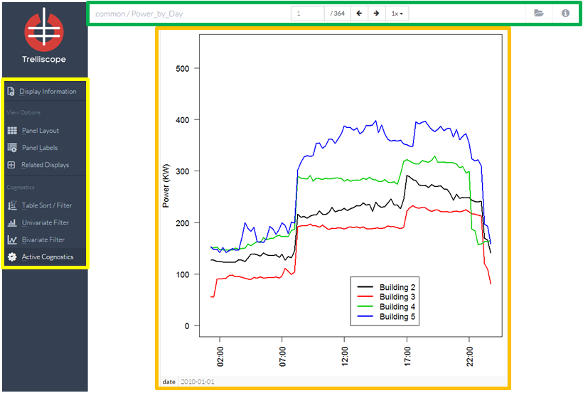
The main display (highlighted in orange) is the center viewing area that will show all graphical and numerical information about the data set.
The display information tab contains information about the current display and the data it is based on. This includes attributes, cognostics, a sample of the data, and the R code that was run to create the visualization in each display.
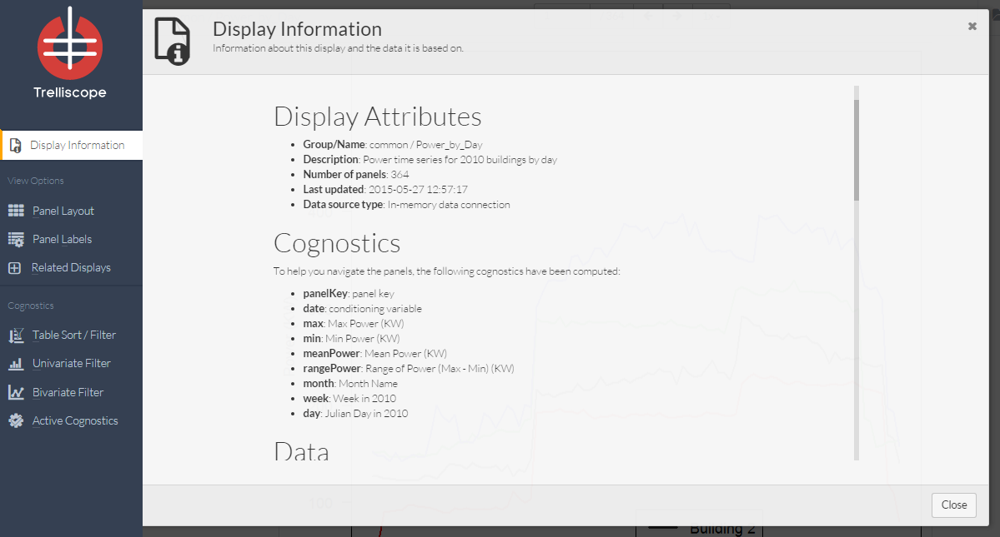
The View Option section controls how your visualization will look. Here you are able to change the number of panels per page along with the panel arrangement.
One of the most important features of Trelliscope is the ability to display multiple panels at once. In this control panel you can specify the arrangement of the panels on each page by entering the number of rows and columns of panels per page. Future functionality for fixing / varying levels of cognostics per page to come.
Example: Here the user has chosen 2 rows and 3 columns. The interactive control panel shows how the display panels will be arranged on your screen.
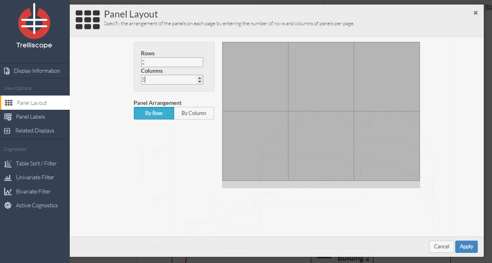
In the panel labels control panel you will be able to specify which cognostics to view underneath each visualization. Select cognostics to view by clicking and/or dragging the ‘Show’ column.
Example: Here the user has selected the date, meanPower and rangePower cognostics.
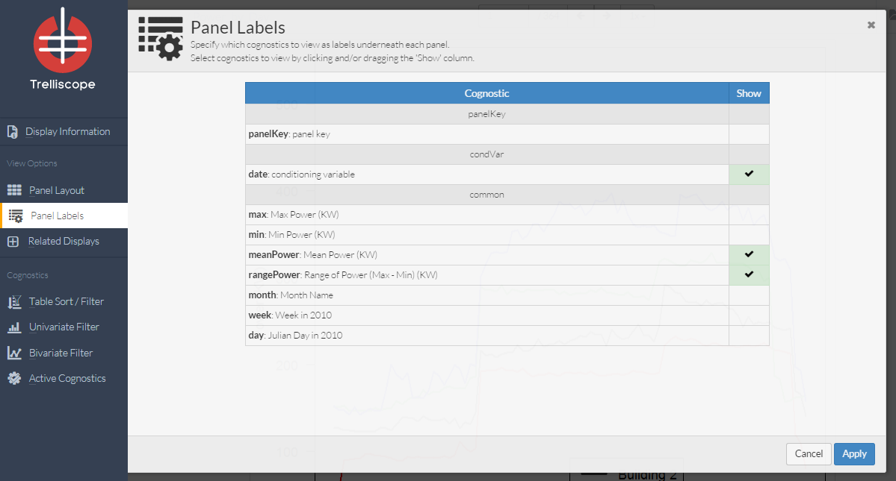
This figure shows one of the resulting display panels, with the new section highlighted in red. 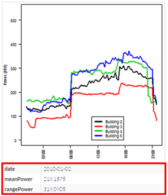
Cognostics are different metrics use to explore the data. In this section the user can quickly sort, filter, or sample our panels based on these metrics. Cognostics can include statistical summaries, categorical variables, goodness-of-fit metrics, etc.
One of the most important aspects of Trelliscope viewer is the ability to quickly organize display panels in a way that is useful. The table sort/filter control panel provides ways to reorder and subset display panels. The center table of the panel shows a row for each of the display panels in the order that they will be shown in the viewer. The table has many interactive features. To sort display panels by one of the cognostics, click the sorting buttons that appear in the column headers (shift-click on the column sorting buttons for multi-column sorting). Below the center table are range boxes, which allow filtering of the displays, and histograms of the cognostics to give a quick view of the distribution.
Example: Here the user clicked the down arrow next to meanPower to sort the display panels from smallest meanPower to largest. The user has also filtered the display to only show panels for days from the months of June and July.
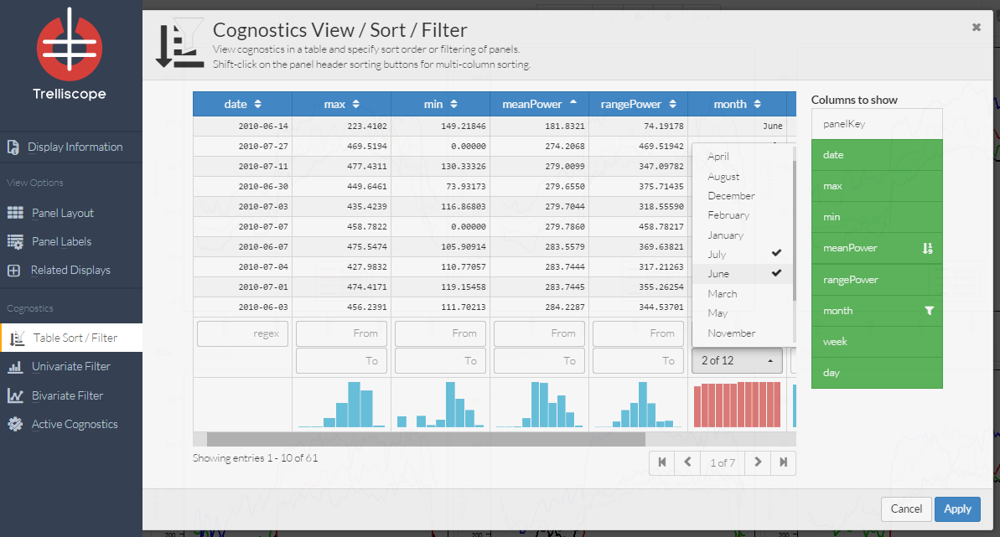
All active sorting or filters will be displayed at the bottom of the viewer. To remove sorts or filters click the “x” icon next to the cognostic name.
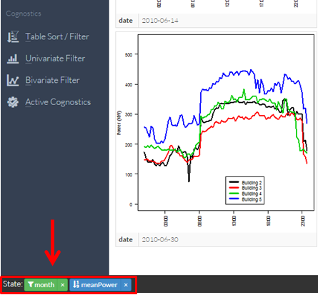
The univariate filter control panel is based on a single cognostic guided by a visual display of the distribution of the cognostic. This distribution can be displayed with a quantile plot or a histogram. The user can select a variable to view and click and drag on the display to specify filtering. This can be useful when trying to isolate or remove outliers from the displays.
A quantile plot displays data by proportion(f-value), across the x-axis.
Example: Here the user has noticed a portion of the data with minimum values of zero. They have decided to select only these days for display by highlighting only this portion of the quantile plot. 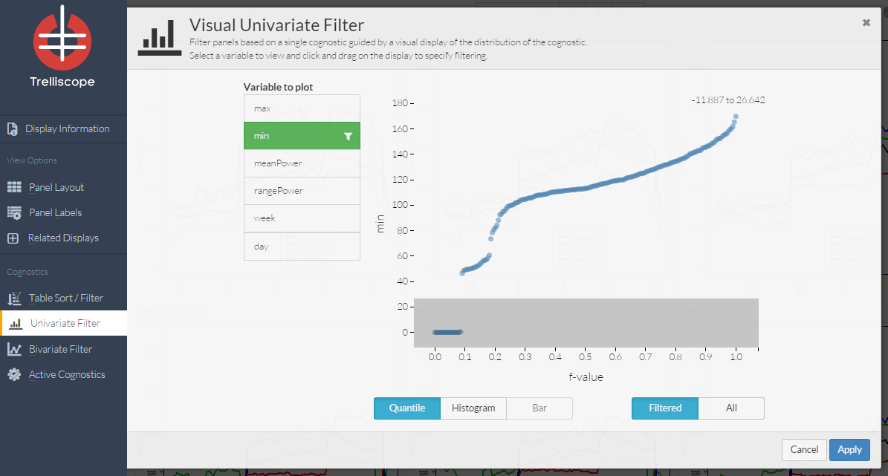
The bivariate filter control panel is based on pairs of cognostics through an interactive scatterplot. The user can select two variables to view and then click and drag on the display to specify filtering.
Example: Here the user has decided to only show displays from the final 100 days of the year that also have meanPower of above 214. 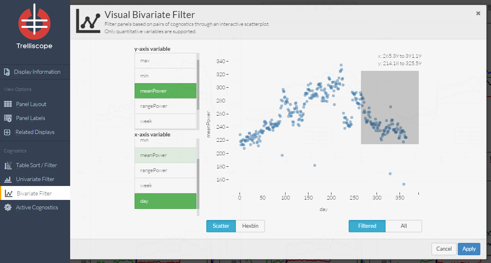
Users can choose which Cognostics to make available for sorting and creating subsets of the displays.
Example: Here the user has decided to remove the week cognostic. 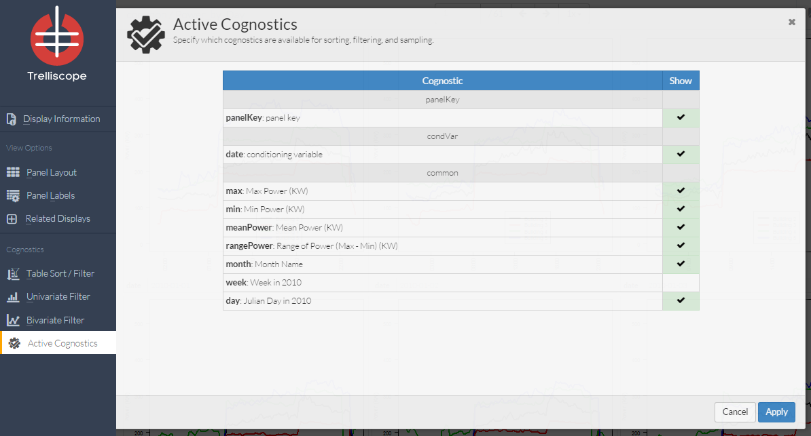